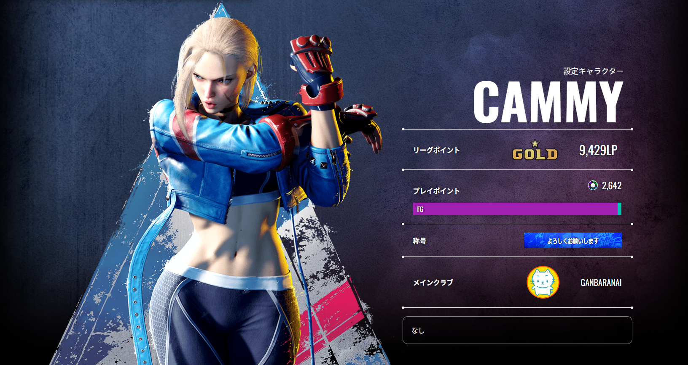
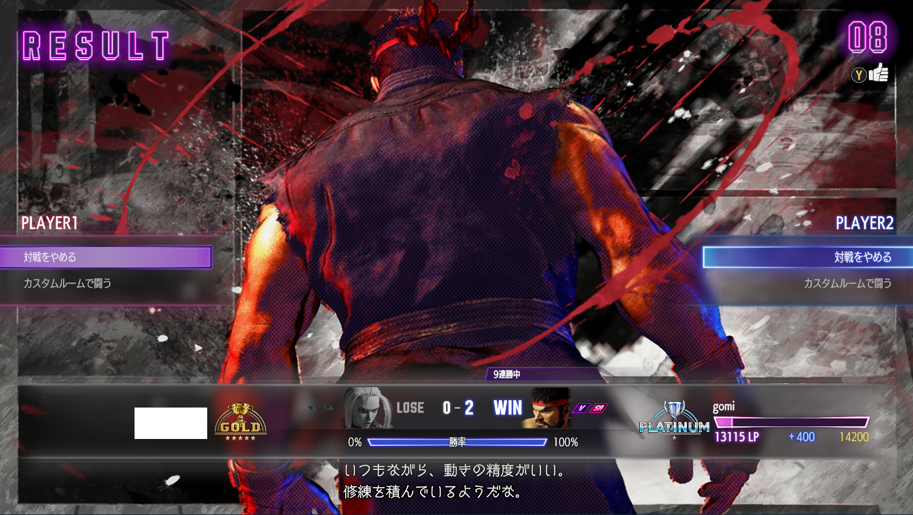
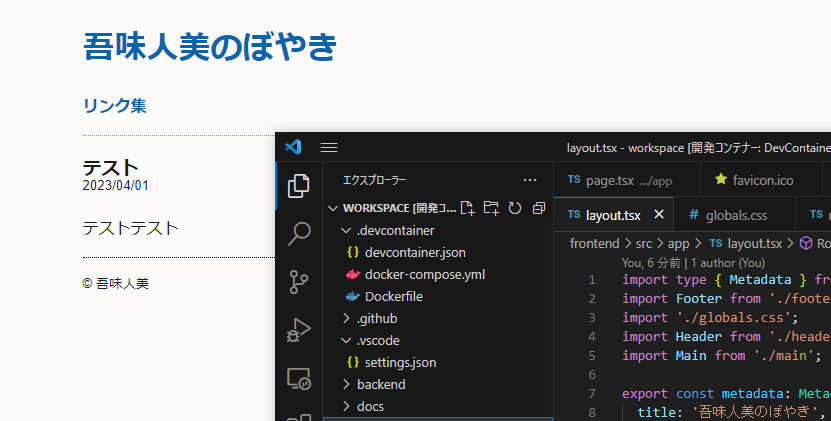
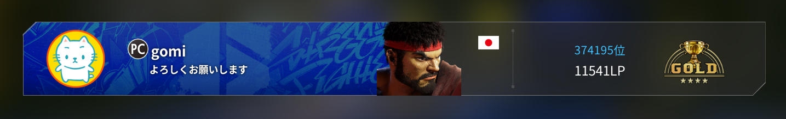
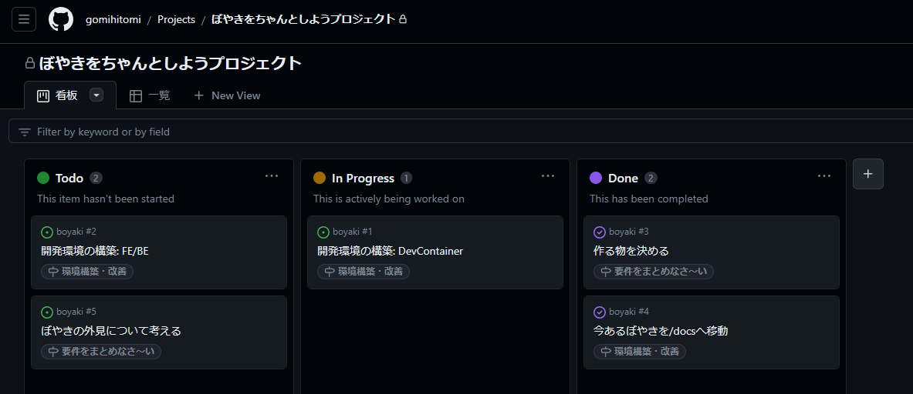
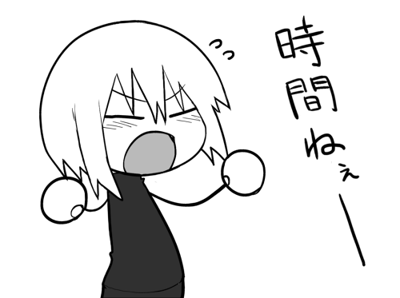

スト6日記-5-
2023/07/27
スト6～～。コントローラー、気になっています。
今はホリコマンダーっていう5000円くらいの6ボタンパッドを使ってます。買ったのさ、スト6用に。買ったんですけど、それはおいといて、レバーレスコントローラーがちょっと気になってます。PUNKWORKSHOPっていう奴のが良さそうなんですよね～～～～安い方ので18000円くらい～～～～高い方だと33000円くらい～～～～ほぢ～～～～！！
でも、届くのに一ヶ月くらい掛かるし、そんなにストリートファイターやり続けてるのかなってのはありますね。ストファイ、面白いけど。面白いんですけどね。時間が溶ける～～～～。創作をやれ吾味人美。
でもなぁ、もう…こう…カラッカラだからさ…カラッカラ人美だからさ…仕方ないのよね…アタシってもう…砂だから…

モダンキャミィもゴールドまでなった…
とりあえずプラチナまで頑張りたいねぇ…
創作は…まぁ…またいつか…こう…そのうちね…
そう言って、彼女は二度と創作をすることはなかった――。エンディングNo.4、枯渇した創作意欲。
■今日のコンテンツ: なし
立体視
2023/07/26
皆は立体視って知ってるかな？
なんか…画像をこう…ねぇ…？良い感じに…なぁ？見ると浮き上がって見える奴…みたいな…らしい…
ぼやけたこと言ってんじゃねぇ！！！！
そういう奴なんですけど、立体視には交差法と平行法という見方があって、僕は今まで交差法しか出来てなかったんですよね。
でも、この度…平行法を会得しました！！（ドンドンパフパフ）
いや～、この歳になっても成長するのは嬉しいモンですね…もう涙で視界がぼやけますわ…
というか30分くらいずっと練習してたら本当に焦点が合わなくなって、ずっと視界がぼやけた感じになって最悪だったので、皆さんは練習する時は短時間で行うようにしてください。
吾味人美とのお約束だよ！
■今日のコンテンツ: なし
ぼくしんぐ
2023/07/25
井上VSフルトンの試合を見たんですけど、皆は見た？凄かった～！
正直、ボクシング全然分かんないんですけど、井上選手はよく話題になるので見れる時は見てたりします。井上選手の試合は凄い派手で面白いねぇ…。格闘技、怖いけど面白い。
見逃し配信として8/7まで見れるので、格闘技とか大丈夫な人は見てみてね。
WBC・WBO 世界スーパーバンタム級タイトルマッチ スティーブン・フルトン VS 井上尚弥
まぁ…
今日はそれくらいか…
■今日のコンテンツ: なし
スト6日記-4-
2023/07/24
スト6、ずっとやってますねぇ。ラシードも追加されたし、楽しげだねぇ。でもさぁ、僕のことを知ってる人の中で、何割の人がスト6について分かるの？っていう話じゃない？スト6の話以外をした方がいいんじゃない？
うるせぇ！！正論には大声で立ち向かうぞ。
これだけ話してはいますが、全然プレイ動画を晒してないのも何か怪しいじゃないですか。エアプ吾味人美なのかも…。ということで、今日はモダンキャミィを触る吾味人美の動画を貼っておきますので、吾味人美の実力を把握しておいてください。
見晒せ～コレがモダンリュウでプラチナ1まで行った(クラシック練習してたらゴールドまで落ちました)女のプレイじゃ～い！！！！
おかしい…もっと僕は…スマートに戦っているはずでは…！？歌声とかと一緒で自分で自分を見直すとギャップが凄すぎて笑ってしまいますね。
この程度の実力でもね…楽しいんで…皆もやってみよう！スト6！
もっと強くなりてぇ…なりてぇよぉ…。
■今日のコンテンツ: 絵 酔いどれラジオ53回
スト6日記-3-
2023/07/23
スト6おもしろ～い。リュウつら～い。チョット前からクラシックをポチポチ練習したんですが、あまりにもキツすぎるのとリュウばっか触ってるとしんどいなと思ったので、最近モダンキャミィを触り始めました。可愛いしね。
可愛いのは大事
触り始めた時は何かよく分んないなこのキャラと思ったんですが、無敵技が無い相手には延々と起き攻めパワハラすれば良いんだ！と気づいてからは人生が豊かになりました。
中K、強Kを気持ち振ったら低空ストライクからの強襲が楽しいんじゃあ～、有利の押しつけだけしてたいんじゃあ～。もう中足とか旋風脚とかで地上戦をして差し替えしに強Pを振る生活に戻りたくないんじゃあ～。
まぁ、でも。リュウ好きだから。またいつか練習したいですね。アプデでしこみラッシュも簡単になるし。
もう有利になる技を振られ続ける生活はいやじゃあ～。
■今日のコンテンツ: なし
大きなのっぽの古時計
2023/07/21
大きい上にのっぽって二重表現では？
■今日のコンテンツ: 絵
寝る前にする妄想
2023/07/19
異世界転生の妄想ずっとしてるのに、寝付きが良すぎて未だにギルドから依頼を受けられていません。どうすれば、どうすればよい？
僕の異世界は…どうすればよい…！？
俺は寝る前の妄想でだけ異世界に転生しているんだが寝付きが良すぎて全然話が進まないんだが？
■今日のコンテンツ: なし
美味しい～
2023/07/18
何もしてないのに一日が終わった。仕事をしていたら終わった。もう寝ないと明日に響く。
もっと鹿を打ったり、人を殴ったりしたかった…
でも時間がないから…仕方ないのよね…。時間が無いから…すぐ寝ないといけないのよね…社会人の悲哀やね…。
時間は作る物おじさん「時間は作る物」
その時間が作れてるのも、僕が貴様の命を刈り取ってないからだが…？フン…世界の理を知ろうともしない愚物が…。
紅蓮の炎で燃え尽きよ！！バーニング・ダウン！！！！
ハァッッ！！
あ、そろそろ寝ないと…。はい…吾味人美…寝ます…。
おやすみ～(^o^)ノ
■今日のコンテンツ: 絵
三連休その③――
2023/07/17
今回の三連休ビックリするくらい何もしなかった。まぁ…それは…最近（一年くらいを指します）僕の創作意欲が枯れきってるから…仕方ないというか…こう…カレっカレだからね…
それはおいといて、皆さんは"何からオタクになった"かを覚えていますか？僕は明確に覚えていて、東方Projectがキッカケだったんですよね。
何で明確にそう思うかというと、初めて二次創作をしたのが東方Projectだったからですね。ココから僕の人生が歪んでいったと言っても過言では無いかも知れません。いや、良い方向にね。六角レンチも曲がってないと駄目でしょ？歪んでちゃ駄目では？うるせぇな。
それで、当時の僕が凄い好きだった東方二次創作の中に東方アレンジという概念がありました。コレは東方Projectというゲームに存在するBGMを各々がアレンジしてCDとしてコミケなどで頒布を行うという文化でした。
若かりし頃の吾味人美はのぅ…ロック系のアレンジサークルを買い漁っておったのじゃ…とらのあなとか…メロンブックスとかで…懐かしいのぅ…
何でこんな話をしたかというと、アレンジサークルの中でも個人的に好みだった鉄腕トカゲ探知機というサークルがあって…そこのオリジナル曲が存在することをさっき始めて知ったからです。
なんかメロブの店内BGMコンピ？みたいな奴で2018年くらい作ってたらしい。白トカゲさんのオリジナル聞きたかったからうれC～。
https://www.youtube.com/watch?v=6qixEKuyDlo&t=333s
鉄腕トカゲ探知機は詩と曲の構成力がバリ好みで、良いんですよね～。本当は僕もこういう曲が作りたいんですけど、パワーが無いから…吾味人美には…望むばかり、力を。
あと何でかはまったく分からないのですが、初期の方のアルバムは本人がSoundCloudに投稿しているので気になったら聞いてみてください。僕のオススメは月光ナッツの心臓人間です。
何だか普通に思い出話をするだけの日でしたが、そんな日もね…あっても良いじゃんね…ぼやきですから…
皆さんも今だからこそ自分のオタクになったキッカケを調べてみると、意外な発見があったりなかったりするかもしれませんね…。
■今日のコンテンツ: 酔いどれラジオ52回
三連休その②――
2023/07/16
誘われたので王将飲みをした。初めて餃子の王将に行ったのですが、滅茶苦茶お安くて凄いわね…。
まぁ…
それくらいか…
昨日と変わらずシカを打って…人を殴ってたから…
でも後1日も休みがある！！まぁ、慌てんなって。見せてやるからよ……。
おい…なんか…デジャヴュが…
うっ…頭が…
■今日のコンテンツ: 絵
三連休その①――
2023/07/15
三連休の時間だああああ！！！！
ぼやきをね、ぼやきを作り上げようね。時間があるんだからね。見せてやりますよ、僕流の休日の使い方って奴をね……。
スト6とTheHunterをやってたら一日が終わりました。
OMG……
でも後2日も休みがある！！まぁ、慌てんなって。見せてやるからよ……。
■今日のコンテンツ: なし
社会の歯車
2023/07/14
22時まで他人のエクセルを壊してました
死 -DEATH-
■今日のコンテンツ: 絵
スト6日記-2-
2023/07/13
僕の名前は吾味人美…ストリートファイター6ではモダンリュウを使っていて、アシストコンボと生ドライブインパクトとOD昇龍で戦う女…。今日もこのランクマッチという荒波の中で強敵たちと鎬を削る戦いを繰り広げるのさ…

運良く9連勝してプラチナに行きました✌読み合いが噛み合い続ければ。勝てる。そう、信じてドライブインパクトを振らせて貰ってます。
ただ、ランクマをやってて思った事はガードをちゃんとして差し替えしとか隙の少ない攻撃で確定反撃を入れてくる人に勝てないなということ。そういうちゃんとした人はコンボもちゃんとしてるのでダメージレースでボロ負けする事が多かったです。
やはりコンボ…コンボはすべてを解決する…。でもコンボ失敗するとムカつくので僕はまだ暫くはなしでやっていこうかと思います。プラチナなのに。
でもしょうがないよね、ムカつきたくねぇから。
文句あっか？
やるか？
なぁ。
スト6で決めっか？！？！？こちとらプラチナやぞ！！！！！！！！
ROUND1…
FIGHT!!
ハァッッッ！！！！！！！！！！！！！！！！！！！！
強さが人を歪めるのではない、欲が人を鈍らせるのだ。 ――吾味人美
■今日のコンテンツ: なし
ぼやき作り日記
2023/07/11
GitHubを使ってチマチマぼやきちゃんとするプロジェクトが進んでおります

マジでだり～。
環境構築始めた10分くらいは楽しいんだけど、それを超えると苦痛が凄い。
Dockerとか未だによく分かってないからだるすぎる～。助けて～
■今日のコンテンツ: なし
スト6日記
2023/07/10
スト6、未だにちょこちょこやってます（本当にちょこちょこ）

未だにモダンリュウでペチペチやってるんですが、相手に待たれるとめっちゃキツE。リュウってキャラはスト6の中だと尖ってる場所がびっくりするくらいなくてどうすれば良いのかよく分からなくなるなどしています。特に待ちルークがきつい～～
球打っても飛んでもインパクト打っても対処されるとチマチマ地上戦しないといけないのがつらE。僕はアシストコンボしか出来ないので、地上戦で指し負けた時の火力負けがヤババーバ・バーババなんだよな…。コンボを覚えれば？うるせぇ！！！コンボできなくてもプラチナ行けることを証明したいんじゃ！！！
待ち気味の相手にはもっとドライブラッシュで触っていくのを考えても良いのかな、DR>中ゴスとかDR>大パンチとかで相手のバーンアウト狙う感じにするとかしないと駄目かな。よくわからんけど。
う～ん、今後もとりあえずちょこちょこやります。楽しいので。
■今日のコンテンツ: 酔いどれラジオ51回
あ
2023/07/09
配信やったのと50分くらいのラジオを撮りました
死 -DEATH-
■今日のコンテンツ: メンヘラとオワコン -転生編-【NEEDY GIRL OVERDOSE】
あち～
2023/07/08
配信やったりDB周り用意したりした。それ以外は、何も、しとりやーせん。
暑くて…
暑くてねぇ…
■今日のコンテンツ: メンヘラとオワコン【NEEDY GIRL OVERDOSE】
SFL
2023/07/07
面白すぎて頭おかしくなるかと思った。
https://www.youtube.com/watch?v=q5YCMjCKSPM
スト6、やっぱりめっちゃ演出良いですね。見てるだけでこんなにヒヤヒヤ出来るの凄い良い。やってる方はたまったもんじゃないだろうけど、最高に楽しい。
いや～～、来週も楽しみっすわ～～
■今日のコンテンツ: なし
ちゃんとしな…
2023/07/06
あまりに適当に作りすぎたせいでサイトの更新とかメンテが凄い面倒くさい。

ちゃんとしたサイトにしよう！！！！！！！！
ぼやきをちゃんとしようプロジェクト、発足！！！！！！！！
外見はあんまり変えないようにしたいけど、めっちゃカッコよくなったらなったで面白いなぁ。ただでさえ何も作れてないのにまた何も作らなくなるなぁ
良いじゃん、別に適当でさ
ちゃんとしないでいこう！！！！！！！！！！！！
ぼやきをちゃんとしようプロジェクト、頓挫！！！！！！！！
まぁ、ぼちぼちやります。
■今日のコンテンツ:
ぼやきをちゃんとしようプロジェクト
降水確率何％だったら傘を持っていくかダービー
2023/07/05
降水確率ってあるじゃないですか。
あれ、何％だったら傘を持っていきます？逆に何％だった傘を持っていきません？当然、外出た瞬間は雨降ってない前提ね。イメージは、朝から出かける用事があって午後からの降水確率が「◯％」だったらっていう話、仮定の話なワケ。
…
…
…
…
…
…
考えた？
考えたよなぁ？ココまで文章読んでまだ考えてない奴いるか？！？！？！居ねぇよなぁ！！！！
それでは、吾味人美の降水確率何％だったら傘を持っていくかダービー、100％から発表します。果たして、何％になったら傘を持っていかなくなるのでしょうか…！？
降水確率:100% … 傘を持っていく！！
降水確率:90% … 傘を持っていく！！
降水確率:80% … 傘を持っていく！！
降水確率:70% … 傘を持っていく！！
降水確率:60% … 傘を持っていく！！
降水確率:50% … 傘を持っていく！！
降水確率:40% … 傘を持っていく！！
降水確率:30% … 傘を持っていかない！！！！！！！！！！！！！！
吾味人美は降水確率が30%以下だと傘を持っていかない！！！！！！！！！！！！！
お、大穴だああああああああああ！！！！！！！！！！！！！！！！！！！
暫くはこの稼ぎで食べて行こうと思います。
ちなみに、折りたたみ傘の所持率はほぼ100％です。
じゃあ、傘いらねーだろ！！！！！！！！
■今日のコンテンツ:
絵
夏にやりたくない家事ランキング
2023/07/04
第一位……アイロンがけ！！！！！！！！！！！！
やりたくなさすぎる～～～～～～～～～～～～～～～～～～～～～～～～～！！！！！！！！！！
世の中の服が全部アイロンをかけなくても良い衣服になれば救われるのにね…なんでそうならないのかな…理想だけだと息苦しくなっちゃうからかな。人は理想を追い続けることで輝けるからかかな。
ゴタクは良いんだよ！！！！！！！！！！！！！！！
僕は兎に角夏にアイロンをかけたくねぇんだ！！！！！！！！！！！！！！！！！
助けてくれ～～～～～～～～～～～！！！！！！！！！！！！！！！！！！！！！！
後このサイト適当に作りすぎたせいでメンテ性が死ぬほど悪いのもどうにかしてくれ～～～～～～～～～！！！！！！！！！！！！！！！
走り続けよう、止まらぬ限り。
■今日のコンテンツ:なし
ちっちゃな頃から悪ガキで
2023/07/03
冷やし中華の反対にあちあち中華って売ってる所みた事ないけど、存在するのかな。
基本的に猫舌なのであんまりあちあち料理って食べたくないんだよな、今は特に暑いしさぁ。ひえひえとまではいかないけど程よくｱﾀﾀｶ…くらいだと嬉しい。
でも難しいな、程よくｱﾀﾀｶ…料理って作ってる時はほぼ間違いなくあちあちだろうし、それを良い感じに提供時間を計算してｱﾀﾀｶ…にするのは至難の業すぎる。というかもしかしなくても料理温度のスイートスポットという概念が難しすぎるのかもしれない。
これね、ホームページも一緒です。
作った瞬間はあちあちでも、すぐｱﾀﾀｶ…になったと思ったらすぐひえひえになるのです。
何となく無情さを感じますが、それもまた風情があって良いのかも、しれませんね。
よくねぇよ。
あ、リンク集追加しました。
■今日のコンテンツ:
酔いどれラジオ50回
ぼやけ！
2023/07/02
随分長いこと愛用していたインターネットインフラであるTwitterくん。最近なんだか挙動が怪しくなっており、このままだと自分の存在がいきなり消えかねないなと思ったので、個人ホームページを作りました。
Twitterが安定するか、僕が飽きるまではちょこちょこ更新しようと思いますのでよろしくお願いします。

相互リンク募集中です！！